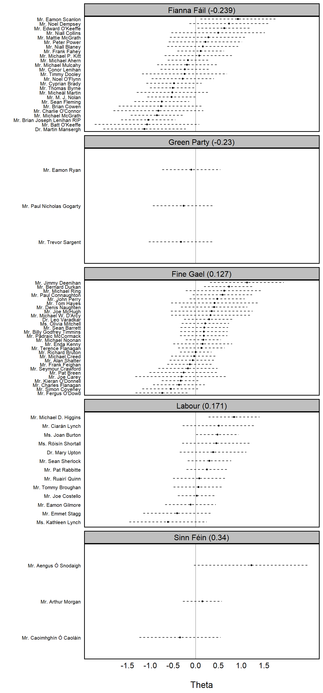

While maybe a bit of an exaggeration, a simple way to view
Wordshoal is to think of it as Wordfish on
steroids. It is a heirarchical factor model that estimates latent
positions (\(\theta_{i}\)) for authors
or groups, allowing for the pooling of multiple documents by the same
author. The first stage of its hierarchical structure is essentially
Wordfish, using a Poisson factor model to estimate local
\(\theta_{i}\) – the main difference
being that, rater than an assumption that each document is independent,
that information can instead be shared hierarchically across documents
from the same author.
In short, rather than just recovering \(\theta_{i}\) for each legislator using the corpus of speeches from (presumably) the same budget debate in the Irish Dail from the Wordfish discussion, we can instead pool together speeches given by legislators across several different debates/topics – using a (full or pseudo) Bayesian process in the second stage to recover a shared latent \(\theta_{i}\).
Below is another example using the data introduced from the the Wordscores and Wordfish discussions, though it’s important to recognize that this example is very small and does not use MCMC.
| Parameter | Doc 1 (Left) | Doc 2 (Left) | Doc 3 (Right) | Doc 4 (Right) |
|---|---|---|---|---|
| Author | Author 1 | Author 1 | Author 2 | Author 2 |
| \(\alpha_{i}\) | 2.0 | 1.8 | 2.2 | 2.0 |
| \(\theta_{i}\) | -1 (Left) | -1 | 1 (Right) | 1 |
| Word | \(\psi_{j}\) | \(\beta_{j}\) |
|---|---|---|
| welfare | 0.2 | 0.8 |
| tax | 0.1 | 0.5 |
| military | 0.3 | 1.2 |
For each document, we’re again going to calculate \(\lambda_{ij}\) for each \(i\times j\) pairing:
Author 1
| Document | Word | Formula | Expected Count |
|---|---|---|---|
| 1 | welfare | \(\exp(2.0_{\alpha_{i}} + 0.2_{\psi_{j}} + 0.8_{\beta_{j}}\times -1_{(\theta_i})\) | \(\exp(1.4) \approx 4.05\) |
| 1 | tax | \(\exp(2.0 + 0.1 + 0.5\times -1\) | \(\exp(1.6) \approx 4.95\) |
| 1 | military | \(\exp(2.0 + 0.3 + 1.2\times -1)\) | \(\exp(1.11) \approx 3.00\) |
| 2 | welfare | \(\exp(1.8 + 0.2 + 0.8\times -1)\) | \(\exp(1.2) \approx 3.32\) |
| 2 | tax | \(\exp(1.8 + 0.1 + 0.5\times -1)\) | \(\exp(1.4) \approx 4.05\) |
| 2 | military | \(\exp(1.8 + 0.3 + 0.12\times -1)\) | \(\exp(0.9) \approx 2.46\) |
Author 2
| Document | Word | Formula | Expected Count |
|---|---|---|---|
| 3 | welfare | \(\exp(2.2 + 0.2 + 0.8\times 1\) | \(\exp(3.2) \approx 24.53\) |
| 3 | tax | \(\exp(2.2 + 0.1 + 0.5\times 1\) | \(\exp(2.8) \approx 16.44\) |
| 3 | military | \(\exp(2.2 + 0.3 + 1.2\times 1)\) | \(\exp(3.7) \approx 40.45\) |
| 4 | welfare | \(\exp(2 + 0.2 + 0.8\times 1)\) | \(\exp(3.0) \approx 20.09\) |
| 4 | tax | \(\exp(2 + 0.1 + 0.5\times 1)\) | \(\exp(2.6) \approx 13.46\) |
| 4 | military | \(\exp(2 + 0.3 + 0.12\times 1)\) | \(\exp(3.5) \approx 33.12\) |
Total Word Counts (\(\lambda_{ij}\)) Weighted by Discrimination \(\beta_{j}\)
| Author | Word | Total \(\lambda\) | \(\beta\) | \(\lambda \times \beta\) |
|---|---|---|---|---|
| 1 | welfare | 7.37 | 0.8 | 5.9 |
| 1 | tax | 9.00 | 0.5 | 4.5 |
| 1 | military | 5.46 | 1.2 | 6.55 |
| 2 | welfare | 44.62 | 0.8 | 35.7 |
| 2 | tax | 29.90 | 0.5 | 14.95 |
| 2 | military | 73.57 | 1.2 | 88.28 |
Author 1: \(5.90 + 4.50 + 6.55 =
16.95\)
Author 2: \(35.7 + 14.95 +
88.28 = 138.93\)
This is about as far as we can go, short of addressing some intuition. The weighted values (\(\sum_{\lambda \times \beta}\)) for each author is a signal that we can use to infer the aggregate \(\theta_{i}\). Moreover, we can generally assume that large positive \(\beta\) words being used often means a positive \(\theta\), while a negative \(\theta\) is most common when those same words are avoided.
However, actually recovering \(\theta_{i}\) would require a mechanism to actually engage in hierarchical pooling across documents. Lauderdale and Herzog (2016) do this by assuming author positions are drawn from a common distribution (\(\theta_{i} \sim N(\mu,\sigma^2)\)). They use Bayesian methods to estimate the most likely values of \(\theta_i\) given the word counts across all documents written by that author. That being said, it’s not a requirement to use a fully Bayesian process – you could just as easily maximize a likelihood function with the same normal prior (though you’d just be approximating, not recovering a full posterior like a Bayesian MCMC process).
docs <- data.frame(document = c('Doc1', 'Doc2', 'Doc3', 'Doc4'),
author = c(1, 1, 2, 2),
alpha = c(2.0, 1.8, 2.2, 2.0)) # Docs - theta_i & alpha_i
words <- data.frame(word = c('welfare', 'tax', 'military'),
psi = c(0.2, 0.1, 0.3),
beta = c(0.8, 0.5, 1.2)) # Words -- Psi_j & beta_j
theta <- data.frame(author = c(1, 2),
theta = c(-1, 1)) # Author Ideologies
wordshoal_grid <- expand.grid(document = docs$document,
word = words$word) %>%
left_join(docs, by="document") %>%
left_join(words, by="word") %>%
left_join(theta, by="author") %>% # All Document-Word Combos
mutate(lambda = exp(alpha + psi + beta*theta),
lambda = round(lambda, 2)) # Calculate lambda_ij
head(tibble(wordshoal_grid))## # A tibble: 6 × 8
## document word author alpha psi beta theta lambda
## <chr> <chr> <dbl> <dbl> <dbl> <dbl> <dbl> <dbl>
## 1 Doc1 welfare 1 2 0.2 0.8 -1 4.06
## 2 Doc2 welfare 1 1.8 0.2 0.8 -1 3.32
## 3 Doc3 welfare 2 2.2 0.2 0.8 1 24.5
## 4 Doc4 welfare 2 2 0.2 0.8 1 20.1
## 5 Doc1 tax 1 2 0.1 0.5 -1 4.95
## 6 Doc2 tax 1 1.8 0.1 0.5 -1 4.06author_word <- wordshoal_grid %>%
group_by(author, word) %>%
summarise(lambda_total = sum(lambda),
beta = first(beta),
signal = lambda_total * beta, .groups="drop") # Calculate Total Lambda x Beta (Signal)
tibble(author_word)## # A tibble: 6 × 5
## author word lambda_total beta signal
## <dbl> <chr> <dbl> <dbl> <dbl>
## 1 1 military 5.46 1.2 6.55
## 2 1 tax 9.01 0.5 4.50
## 3 1 welfare 7.38 0.8 5.90
## 4 2 military 73.6 1.2 88.3
## 5 2 tax 29.9 0.5 15.0
## 6 2 welfare 44.6 0.8 35.7tibble(author_word %>%
group_by(author) %>%
summarise(theta_signal = sum(signal))) # Theta Signal## # A tibble: 2 × 2
## author theta_signal
## <dbl> <dbl>
## 1 1 17.0
## 2 2 139.library(wordshoal) # Load Wordshoal Package
data_corpus_irish30 <- wordshoal::data_corpus_irish30 # Speeches from 30th Irish Dail
names(docvars(data_corpus_irish30)) # Docvars## [1] "debateID" "memberID" "member.name" "party.name" "party.abbrev"
## [6] "party.colour" "in.coalition"head(tibble(docvars(data_corpus_irish30))) # Sample## # A tibble: 6 × 7
## debateID memberID member.name party.name party.abbrev party.colour
## <dbl> <int> <chr> <chr> <chr> <chr>
## 1 21 9 Mr. Michael Ahern Fianna Fáil FF #66BB66
## 2 21 26 Mr. Sean Barrett Fine Gael FG #6699FF
## 3 21 106 Mr. Tommy Broughan Labour LAB #CC0000
## 4 21 119 Mr. Richard Bruton Fine Gael FG #6699FF
## 5 21 133 Ms. Joan Burton Labour LAB #CC0000
## 6 21 212 Mr. Paul Connaughton Fine Gael FG #6699FF
## # ℹ 1 more variable: in.coalition <lgl>wordshoal_dfm <- dfm(tokens(data_corpus_irish30))
wordshoal_fit <- textmodel_wordshoal(x = wordshoal_dfm,
dir = c(7,1),
groups = docvars(data_corpus_irish30, "debateID"), # Group = Debate
authors = docvars(data_corpus_irish30, "member.name")) # Author = Legislator##
## Scaling 10 document groups..........
## Factor Analysis on Debate-Level Scales.........
## Elapsed time: 3.67 seconds.# Document 7 (Left) = Debate 21, Member = Joe Castello (Irish Labour Party)
# Document 1 (righ) = Debate 21, Member = Michael Ahern (Fianna Fail Part)
combined_thetas <- merge(as.data.frame(summary(wordshoal_fit)[[2]]),
docvars(data_corpus_irish30),
by.x = "row.names", by.y = "member.name") %>%
distinct(memberID, .keep_all = T) # Combine Thetas & Associated Meta
head(tibble(combined_thetas)) # Print Head## # A tibble: 6 × 9
## Row.names theta se debateID memberID party.name party.abbrev party.colour
## <I<chr>> <dbl> <dbl> <dbl> <int> <chr> <chr> <chr>
## 1 Dr. Leo … 0.291 0.545 21 2192 Fine Gael FG #6699FF
## 2 Dr. Mart… -1.12 0.903 30 2002 Fianna Fá… FF #66BB66
## 3 Dr. Mary… 0.380 0.729 27 1751 Labour LAB #CC0000
## 4 Mr. Aeng… 1.22 1.26 30 1829 Sinn Féin SF #008800
## 5 Mr. Alan… -0.0665 0.507 21 1028 Fine Gael FG #6699FF
## 6 Mr. Arth… 0.146 0.427 26 1824 Sinn Féin SF #008800
## # ℹ 1 more variable: in.coalition <lgl>aggregate_party_thetas <- aggregate(theta ~ party.name, data = combined_thetas, mean) %>%
arrange(theta) # Aggregated by Party
party_order <- aggregate_party_thetas %>%
arrange(theta) %>%
mutate(party_label = paste0(party.name, " (", round(theta, 3), ")")) %>%
pull(party_label)
combined_thetas %>%
left_join(aggregate_party_thetas %>%
rename(party_theta = theta), by = 'party.name') %>%
mutate(party_label = paste0(party.name, ' (', round(party_theta, 3), ')'),
party_label = factor(party_label, levels = party_order)) %>%
ggplot(aes(x = theta, y = reorder(Row.names, theta))) +
geom_point(size = 1) +
geom_segment(aes(x = theta - se, xend = theta + se), size = 0.5, linetype = 2) +
geom_vline(xintercept = 0, color = "black", alpha = 1/3) +
facet_wrap(~party_label, ncol = 1, scales = 'free_y') +
scale_x_continuous(breaks = seq(-1.5, 1.5, 0.5)) +
labs(x = '\nTheta',
y = '') +
default_ggplot_theme +
theme(axis.text.y = element_text(size = 8, colour = 'black'),
axis.text.x = element_text(size = 12, colour = 'black'),
strip.text = element_text(size = 12, colour = 'black'),
panel.grid = element_blank())